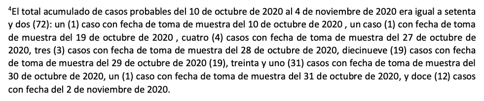
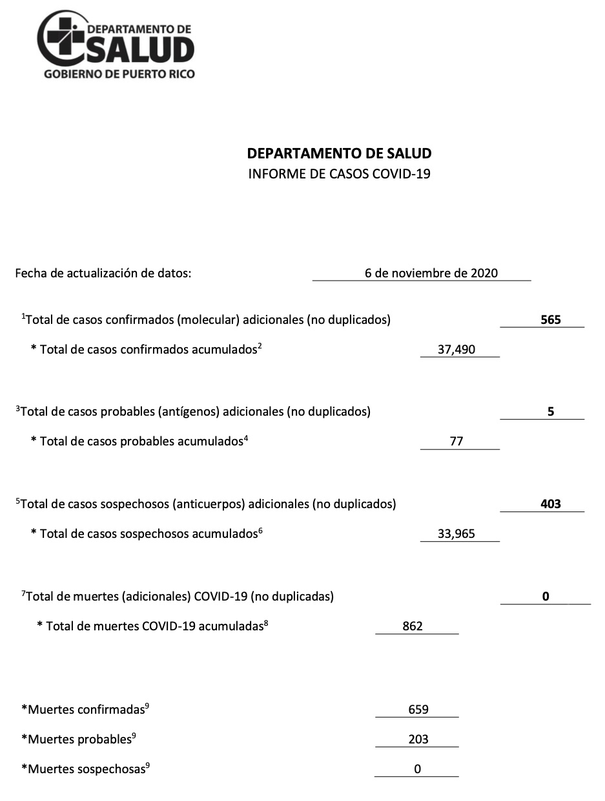
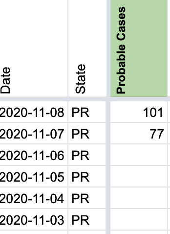
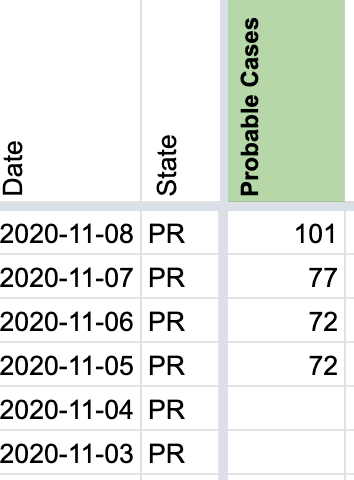

[PR] Probable cases totals for Nov. 5-6
State or US: Puerto Rico
As reported in https://github.com/COVID19Tracking/issues/issues/936, Puerto Rico on Nov. 7, 2020 changed its case classification to reclassify cases supported by only an antibody test as “suspect,” and use the “probable” label for cases arising from antigen testing. As a response to this, https://github.com/COVID19Tracking/issues/issues/937 cleared the probable case history, and the Nov. 7 daily update picked up the 77 probable cases total for that day.
But the Puerto Rico Department of Health’s daily report (released Nov. 7 data up to Nov. 6 inside) actually has a footnote documenting the probable cases total for a couple of earlier dates:

…which reads at the beginning: “The total of probable cases from October 10, 2020 to November 4, 2020 was seventy two (72): [detail list of the dates and counts by sample date].” From this we can backfill the count of probable cases on Nov. 5 and 6 as 72. (Yes, Nov. 5 and 6. See below.)
NOTE ON OFF-BY-ONE DATES: The way the Puerto Rico Department of Health daily reports are dated is that the front page has a “data update date” field (“fecha de actualización de los datos”), and then they are published on the next date, which makes the dates inside the official report systematically one date earlier than the COVID Tracking Project’s scraper-based capture. So while the Project’s data currently says 37,490 confirmed cases in Puerto Rico on Nov. 7, the Department of Health gives that as its Nov. 6 total. Therefore, the Nov. 4 date on the footnote above should be read as Nov. 5 using the Project’s dating convention. And that implies:
- 72 cases as of Nov. 4 (PRDoH) ⟹ 72 cases on Nov. 5 (COVID Tracking)
- 5 new, 77 total on Nov. 6 (PRDoH) ⟹ 72 on Nov. 6 and 77 on Nov. 7 (COVID Tracking)
Sources:
- Puerto Rico Department of Health daily report released Nov. 7, 2020 (data up to Nov. 6)
Screenshot of front page of this report. Note that it reads November 6, 2020, but the filename says Nov. 7 and the totals it reports are what the Project tracks as Nov. 7.

Thank you as always @sacundim for helping us have the best data possible for PR!
Before: 
After: 